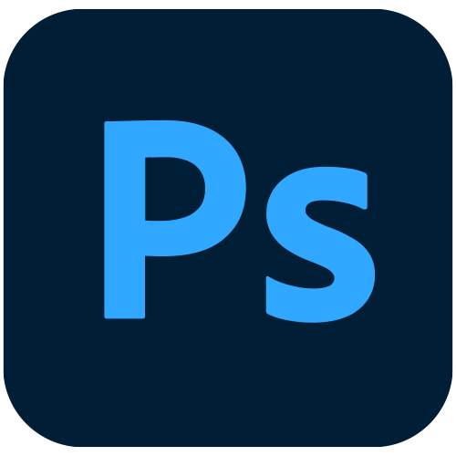
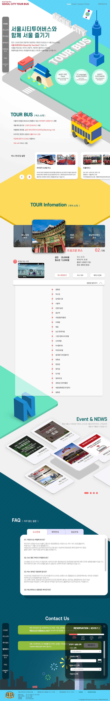

logo
Concept
Work Process
Output
SEOUL CITY TOUR BUS
UI/UX Design
Overview
서울 시티투어 버스 웹 사이트를 원페이지 구성으로 리뉴얼하며 3D 그래픽을 메인으로 작업하였습니다.
작업 기여도
개인작업 100%
작업 프로그램

Concept
Analysis
세계적인 관광도시에서 운영하는 것과 같은 서울의 시티투어 버스입니다. 서울의 유명 관광지들을 위주로 선회를 합니다.
Design Concept
서울 대표 관광지들을 아이소메트릭 그래픽으로 표현하고, 원페이지의 처음부터 끝까지 서울을 한바퀴 순회화는 컨셉으로 디자인했습니다.
Keyword
# 아이소메트릭
# 서울 관광지
# SIMPLE
Mood Board
Color
#00526C
#6BE5BF
#FEDB5D
#006CB9
#F9F9F9
Typo
에스코어드림 Bold
에스코어드림 Regular
나눔바른고딕 Bold
나눔바른고딕 Medium
나눔바른고딕 Light
나눔바른고딕 ExtraLight
Work Process
일러스트에서 아이소메트릭 그래픽과 3D작업을 통하여 소스제작을 하였습니다.
Output
Display(width * height) : 1000px * 6300px
OnePAGE
좌측 고정형 플로팅 메뉴
클릭 시 해당 페이지 이동
각 배너 클릭 시 하단 정보 업데이트
이미지 Hover 시 위로 올라옴
클릭 시 모달 팝업
예약하기 메뉴 클릭 시
우측 플로팅 화면 팝업

그리드 활용 이미지 배치를 통한
재봉틀 이미지 표현
좌측 타이포그래피와 디자인 통일
선요소 배치
클릭 가능 퀵메뉴
사용자 검색 빈도수에 따른 메뉴 노출
채도를 통한 백그라운드와 분리
(활성화 메뉴 표시)